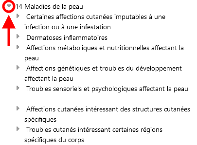

FR
FR
Lorsque vous naviguez dans la CIM-11, vous visualiserez la hiérarchie des classifications sur le côté gauche de l'écran. En cliquant sur un élément, les détails de cette entité s'affichent à droite de l'écran.
Initialement, le système n'affiche que les éléments du niveau supérieur. Toutefois, vous pouvez rendre les enfants visibles en cliquant sur les petits triangles situés à gauche des éléments.

Vous pouvez utiliser le bouton  pour fermer toutes les branches ouvertes et revenir au niveau supérieur de la hiérarchie.
pour fermer toutes les branches ouvertes et revenir au niveau supérieur de la hiérarchie.